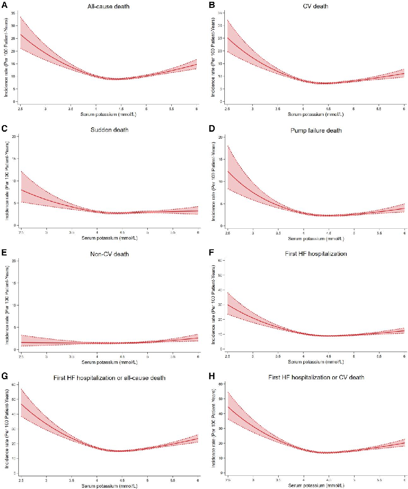
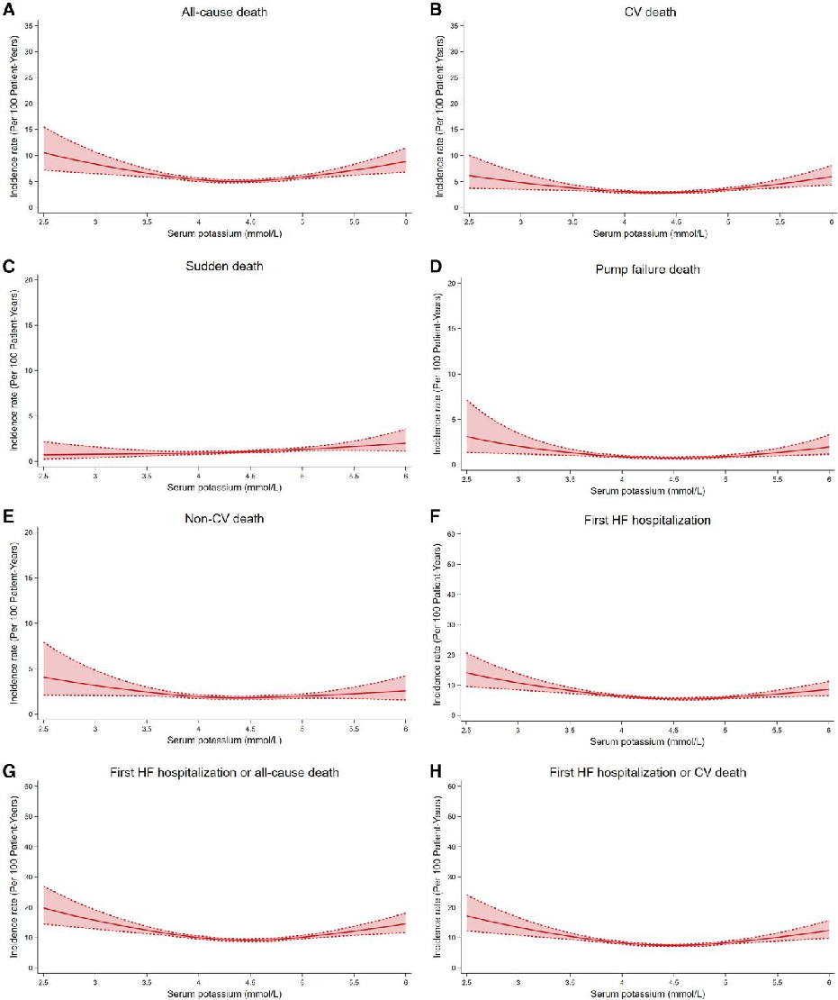

本ページで使用する略語一覧
| 略語 | 正式名称 — 日本語訳 |
| HF | Heart failure — 心不全 |
| HFrEF | Heart failure with reduced ejection fraction — 左室収縮能低下型心不全（LVEF ≤40%） |
| HFpEF | Heart failure with preserved ejection fraction — 左室収縮能保持型心不全（LVEF ≥50%） |
| HFmrEF | Heart failure with mildly reduced ejection fraction — 軽度収縮能低下型心不全（LVEF 41–49%） |
| LVEF | Left ventricular ejection fraction — 左室駆出率 |
| GDMT | Guideline-directed medical therapy — ガイドライン指示薬物療法 |
| MRA | Mineralocorticoid receptor antagonist — ミネラルコルチコイド受容体拮抗薬 |
| RCT | Randomized controlled trial — ランダム化比較試験 |
| IPD | Individual patient data — 個別患者データ |
| aHR | Adjusted hazard ratio — 調整済みハザード比 |
| CI | Confidence interval — 信頼区間 |
| eGFR | Estimated glomerular filtration rate — 推定糸球体濾過量 |
| NT-proBNP | N-terminal pro-B-type natriuretic peptide — NT-プロBNP |
| NYHA | New York Heart Association — NYHA機能分類 |
SECTION 1 なぜこの研究が必要だったか
カリウム管理の「盲点」
心不全（HF）患者ではカリウム恒常性が乱されやすい。利尿薬による低カリウム血症と、MRA・レニン-アンジオテンシン系阻害薬による高カリウム血症がともに問題となる。臨床では高カリウム血症への懸念から GDMT が中断・減量されることが多いが、実際に「どの範囲のカリウムが安全か」という問いには明確な答えが出ていなかった。
特に未解決だった問いは2つある。①HFrEFとHFpEFで最適カリウム範囲は異なるのか、②現在使われているカリウム基準値（正常域 3.5〜5.0 mmol/L）は心不全患者にとって本当に適切なのか——この個別患者データ（IPD）メタ解析はこれに答えるために設計された。
SECTION 2 研究デザイン
12のRCTから46,069人の個別データを統合
HFrEF 7試験（CHARM-Added、CHARM-Alternative、EMPHASIS-HF、ATMOSPHERE、PARADIGM-HF、DAPA-HF、GALACTIC-HF）とHFpEF 5試験（CHARM-Preserved、I-PRESERVE、TOPCAT Americas、PARAGON-HF、FINEARTS-HF）から個別患者レベルのデータを統合解析した。
ベースラインの血清カリウムを6カテゴリーに分類し（<3.5、3.5〜<4.0、4.0〜<4.5、4.5〜<5.0、5.0〜<5.5、≥5.5 mmol/L）、さらに連続変数としてRestricted cubic splineで解析した。主要エンドポイントは全死因死亡。副次エンドポイントは心血管死、突然死、ポンプ不全死、初回HF入院、複合エンドポイント。
（7試験、LVEF ≤40%）
（5試験、LVEF ≥50%）
（HFrEF 7 + HFpEF 5）
観察期間
観察期間
HFrEF / HFpEF
HFrEFにおけるカリウム分布
| K（mmol/L） | 患者数 | 割合 | 臨床的意義 |
|---|---|---|---|
| <3.5 | 502 | 1.6% | 低カリウム血症（重篤） |
| 3.5〜<4.0 | 3,301 | 10.2% | 低カリウム血症（軽度） |
| 4.0〜<4.5 | 11,511 | 35.6% | 最大集積帯（参照群） |
| 4.5〜<5.0 | 11,963 | 37.0% | 最良アウトカム域 |
| 5.0〜<5.5 | 4,119 | 12.7% | 軽度高カリウム血症 |
| ≥5.5 | 950 | 2.9% | 高カリウム血症 |
SUMMARY 第1章のキーメッセージ
SECTION 3 逆J字型リスク曲線 — 低カリウムが圧倒的に危険
【最重要メッセージ：HFrEF】 カリウムとアウトカムの関係は「逆J字型」。低カリウム血症（<3.5 mmol/L）は全死因死亡リスクを49%増加させる（aHR 1.49、95% CI 1.27–1.76）。一方、軽度高カリウム血症（5.0〜5.5 mmol/L）は多変数調整後に死亡リスクの増加と関連しない（aHR 0.96、95% CI 0.89–1.04）。
Figure 1：HFrEFにおけるカリウムとアウトカムの関係（連続変数解析）

Figure 1. HFrEFにおける各アウトカムの発生率（カリウム連続変数、per 100 患者年）。
(A) 全死因死亡、(B) 心血管死、(C) 突然死、(D) ポンプ不全死、(E) 非心血管死、(F) 初回HF入院、(G) HF入院または全死因死亡複合、(H) HF入院または心血管死複合。
X軸：カリウム濃度（mmol/L）。Y軸：未調整発生率（per 100 患者年）。実線：発生率曲線、破線：95% CI。
全7アウトカムで「逆J字型」が明確であり、カリウムが低いほどリスクが急激に上昇する。非心血管死（E）のみリスク曲線はほぼ平坦であり、低カリウムリスクの心血管特異性を示す。
HFrEF：カリウムカテゴリー別 全死因死亡（参照群：4.0〜<4.5 mmol/L）
| K（mmol/L） | n | 粗発生率 （/100患者年） |
未調整HR （95% CI） |
調整済みHR （95% CI） |
|---|---|---|---|---|
| <3.5 | 502 | 17.7（15.1–20.6） | 1.86（1.58–2.18） | 1.49（1.27–1.76） |
| 3.5〜<4.0 | 3,301 | 11.1（10.3–11.9） | 1.19（1.10–1.29） | 1.07（0.98–1.16） |
| 4.0〜<4.5 参照 | 11,511 | 9.4（9.0–9.7） | — | — |
| 4.5〜<5.0 | 11,963 | 9.3（9.0–9.7） | 0.98（0.93–1.04） | 0.94（0.89–1.00） |
| 5.0〜<5.5 | 4,119 | 10.5（9.9–11.2） | 1.07（0.99–1.16） | 0.96（0.89–1.04） |
| ≥5.5 | 950 | 13.8（12.2–15.6） | 1.32（1.16–1.51） | 1.02（0.89–1.16） |
調整変数：年齢・性別・地域・人種・心拍数・NYHA III/IV・収縮期血圧・BMI・LVEF・血清クレアチニン・Hb・NT-proBNP（対数変換）・AF既往・MI既往・糖尿病既往・利尿薬使用・MRA使用・ACEi/ARB/ARNI使用・治療群（試験でstratify）
HFrEF：低カリウム血症（<3.5 mmol/L）の複数アウトカムへの影響
（1.27–1.76）
（1.32–1.88）
（1.18–2.12）
（1.29–2.25）
（1.02–1.46）
全死因死亡（1.20–1.58）
参照群：K 4.0〜<4.5 mmol/L。非心血管死のaHRは1.15（0.70–1.91）と有意差なし——低カリウムリスクの心血管特異性を裏付ける。
SECTION 4 軽度高カリウム血症（5.0〜5.5 mmol/L）は多変数調整後に死亡リスクと無関係
【重要：GDMTを継続すべき根拠】 HFrEFでK 5.0〜5.5 mmol/Lの調整済みHR（全死因死亡）は 0.96（95% CI 0.89–1.04）——参照群（4.0〜4.5）との差はなく、むしろ数値上は低い。粗発生率では10.5/100患者年（参照群9.4）とやや高いが、これは高K群がMRAを多く使用し腎機能も悪い（重症例が多い）ためであり、交絡を調整すると消失する。
HFrEFにおける最低リスクカリウム範囲の同定（3手法）
最低リスクカリウム範囲を3つの統計手法で同定した。
Binary recursive partitioning：3.7〜5.0 mmol/L が最低リスク範囲として同定された（全死因死亡）。
調整済みHR の最小値：ナディルのカリウム濃度は 4.7 mmol/L（全死因死亡）。
発生率の最小値：ナディルのカリウム濃度は 4.4 mmol/L（全死因死亡）。
すべてのアウトカムを考慮すると、最低リスクと関連する重複範囲は 4.2〜5.0 mmol/L であった。
SECTION 5 サブグループ解析：eGFR・治療・MRA使用による層別
腎機能別（eGFR <60 vs ≥60 mL/min/1.73 m²）
eGFR <60群では全アウトカムで高い発生率を示した。eGFR <60群では発生率ナディルのカリウム濃度が4.8 mmol/Lと、eGFR ≥60群（4.3〜4.4 mmol/L）よりやや高かった。ただし、両群ともナディルは最終的な最適範囲（4.2〜5.0 mmol/L）内に収まっており、eGFR別に目標範囲を大きく変える必要はないとされた。全死因死亡・心血管死・複合アウトカムでeGFRとの有意な交互作用が認められた。
治療アームおよびMRA使用別
カテゴリー解析では治療アームおよびMRA使用との有意な交互作用は認められなかった。連続変数解析では、MRA使用群で発生率ナディルのカリウムが非使用群よりやや高かった（4.5 vs 4.4 mmol/L）が、差は小さく臨床的意義は限定的であった。
SUMMARY 第2章のキーメッセージ
SECTION 6 U字型だが平坦 — HFrEFとは対照的なリスクパターン
Figure 2：HFpEFにおけるカリウムとアウトカムの関係（連続変数解析）

Figure 2. HFpEFにおける各アウトカムの発生率（カリウム連続変数、per 100 患者年）。
(A) 全死因死亡、(B) 心血管死、(C) 突然死、(D) ポンプ不全死、(E) 非心血管死、(F) 初回HF入院、(G) HF入院または全死因死亡複合、(H) HF入院または心血管死複合。
HFrEF（Figure 1）と比較して発生率全体が低く、リスク曲線は「浅いU字型」。カリウムの低下に伴うリスク急増がHFrEFほど顕著でなく、曲線がずっと平坦。突然死（C）はとくに低リスクかつ平坦であった。
HFpEF：カリウムカテゴリー別 全死因死亡（参照群：4.0〜<4.5 mmol/L）
| K（mmol/L） | n | 粗発生率 （/100患者年） |
未調整HR （95% CI） |
調整済みHR （95% CI） |
|---|---|---|---|---|
| <3.5 | 290 | 7.4（5.7–9.5） | 1.30（1.00–1.70） | 1.14（0.87–1.48） |
| 3.5〜<4.0 | 1,968 | 5.8（5.3–6.5） | 1.11（0.98–1.26） | 1.07（0.94–1.21） |
| 4.0〜<4.5 参照 | 5,356 | 5.1（4.8–5.5） | — | — |
| 4.5〜<5.0 | 4,602 | 5.3（4.9–5.7） | 1.06（0.96–1.17） | 1.03（0.93–1.13） |
| 5.0〜<5.5 | 1,326 | 5.8（5.1–6.5） | 1.21（1.05–1.40） | 1.05（0.91–1.22） |
| ≥5.5 | 181 | 9.0（6.8–11.9） | 1.92（1.43–2.57） | 1.29（0.96–1.74） |
HFpEFでは全カテゴリーで発生率がHFrEFより低い。K <3.5でも調整後aHRは1.14（非有意）。K ≥5.5のaHR 1.29も95% CI 0.96–1.74と有意差なし。
HFpEFにおける最低リスクカリウム範囲
HFpEFでは、aHRナディルと発生率ナディルはいずれも 4.3〜4.6 mmol/L 付近に収束した。Binary recursive partitioningは全死因死亡に対して 3.8〜5.3 mmol/L という広めの範囲を示した。すべてのアウトカムを考慮した重複範囲は 4.2〜5.1 mmol/L であった——HFrEFの4.2〜5.0 mmol/Lとほぼ同一の範囲である。
SUMMARY 第3章のキーメッセージ
SECTION 7 「低カリウムを避け、高カリウムを恐れすぎない」——考え方の転換
臨床的含意：3つの実践ポイント
低カリウム血症を積極的に是正する：とくにHFrEFでは低カリウム血症が強力な予後不良因子。K <4.0 mmol/Lを「低カリウム血症」として再定義することを著者らは提案している。現在の一般基準（<3.5 mmol/L）では多くのリスク集団が見逃される。
軽度高カリウム血症でGDMTを中断しない：K 5.0〜5.5 mmol/Lは多変数調整後に死亡リスク増加と関連しない。他の原因除外と経過観察を優先し、生命予後を改善するGDMT（MRA・ACEi/ARB/ARNI・SGLT2i）を安易に中止しない。
目標カリウム範囲は 4.2〜5.0 mmol/L（両フェノタイプ共通）：POTCAST試験（血漿K 4.5〜5.0 mmol/Lへの補正が心室性不整脈・入院・死亡の複合を減少）の結果とも整合的。HFrEF・HFpEF問わず同じ目標範囲が適用できる。
「低カリウム血症の再定義」の根拠
本研究の結果から、著者らは「HF患者における低カリウム血症をK <4.0 mmol/Lと定義すべき」と提案している。K 3.5〜4.0 mmol/Lは現在「正常」とされているが、HFrEFではこの範囲でも参照群（4.0〜4.5）と比べてaHR 1.07（0.98–1.16）とわずかに高い傾向がある（統計的有意差はないが数値上の差は存在する）。さらに、慢性腎臓病患者でもK <4.0 mmol/Lが腎・心血管アウトカムと強く関連するとの報告がある。
低カリウムリスクの機序として、低Kはレニン-アンジオテンシン-アルドステロン系を活性化してナトリウム貯留と動脈トーンを高め、過剰なアルドステロンのマーカーとしても機能する。また、LOOP試験のサブ解析では血漿K低下と心房細動の強い関連（1 mmol/L低下で5倍のオッズ比）も報告されている。
カリウム結合薬（パティロマー・炭酸水素ジルコニウムナトリウム）の位置づけ
カリウム結合薬はGDMT継続を可能にするための補助手段として期待されているが、本研究の著者らは「役割は依然として不明確」と指摘している。炭酸水素ジルコニウムナトリウムではHF悪化の発生率上昇が報告されており（薬剤のナトリウム含量による体液貯留の可能性）、GDMTを継続させるために積極的にカリウムを下げる前に、軽度高K（5.0〜5.5）が本当にリスクとなるかを慎重に評価することが重要である。
本解析で使用したのは血清カリウムだが、POTCAST試験は血漿カリウムを使用した。一般に血清カリウムは血漿よりも約0.1〜0.4 mmol/L高い（凝固時の細胞からのカリウム放出のため）。著者らは差の中央値を0.2 mmol/Lと仮定して換算を行っており、POTCAST目標血漿K（4.5〜5.0 mmol/L）は血清K換算で約4.7〜5.2 mmol/Lに相当する。本研究の発生率ナディル域（4.2〜5.0 mmol/L）と重なる範囲であり、両研究の結果は整合的といえる。
SECTION 8 限界と適用上の注意
この研究の限界
本研究はpost-hoc解析であり、因果関係の確立はできない。RCT集積のため選択バイアスがあり、多くの試験で高カリウム血症患者が除外されており（高K群のリスクが過小評価されている可能性）、また重篤な腎機能障害患者は含まれていない。
さらに、HFmrEF（LVEF 41〜49%）は解析対象外である。血清カリウムは前分析的要因（溶血・採血手技・処理遅延）にも影響されるが、これらは各試験間で統一されていない。これらの点を踏まえた上で本研究の結果を解釈する必要がある。
SUMMARY 第4章のキーメッセージ
出典：Ono R, Chimura M, Docherty KF, et al. Optimal serum potassium concentrations in heart failure: an individual patient data meta-analysis. European Heart Journal. 2026.
DOI：https://doi.org/10.1093/eurheartj/ehag341
本資料は教育目的で作成したサマリーです。診断・治療方針の決定には必ず原典を参照してください。
制作：ICU 関谷